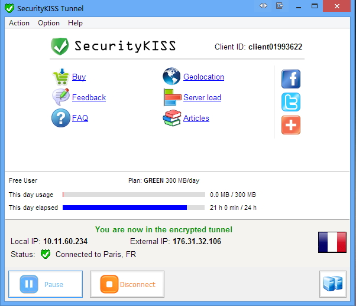
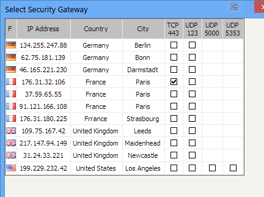
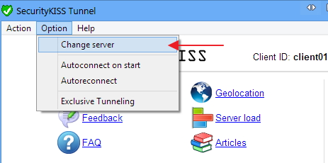
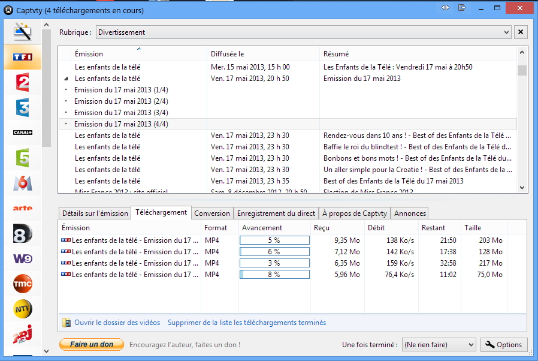

Sun 27 October 2013
Dans cet article, j'essayerai de présenter une autre alternative pour regarder pas mal de télé francophone (Française, Québecoise...)
On aura besoin de deux outils :
Comme le précédent article, on aura pas le choix de passer par un VPN. Une sorte de service qui nous permet de changer de pays de connexion (pour faire simple). Il exsite pas mal d'offre sur le marché, pour ma part j'ai choisi SecurtiyKiss qui propose une offre gratuite de 300 mégaoctet par jour.
Une fois inscrit sur le site, je vous propose de télécharger leur outil SecurtiyKiss Tunnel qui facilite pas mal les chose en matière de connexion à leur service (On pourrait s'en passer et créer nous la connexion VPN à leur site, mais pourquoi se compliquer la vie).

L'outil propose un nombre de pays limités. Parmi ces choix, se trouve le pays qui nous intéresse qui est la France !

Ensuite, on change le pays pour France et le tour est joué. 
Maintenant, on peut se connecter sur les service comme Pluzz, et autre service de VOD pour mater du contenu français !
Moi, personelllement, je préfère télécharger mes émission pour les regarder plus tard. J'ai trouvé un outil pour ça qui se nomme Captvty.
Par exemple, dans le screenshot suivant, j'ai choisi de téléchargé l'émission d'Arthur : Les enfants de la télé :

Astuce : Lance le téléchargement de tous les fichiers en même temps, pour bypasser la limite des 300 méga journalier. Et oui, une fois un téléchargement commencé, leur serveur ne peut vous arrêter !
blog comments powered by Disqus